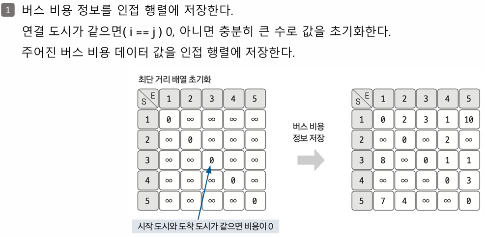
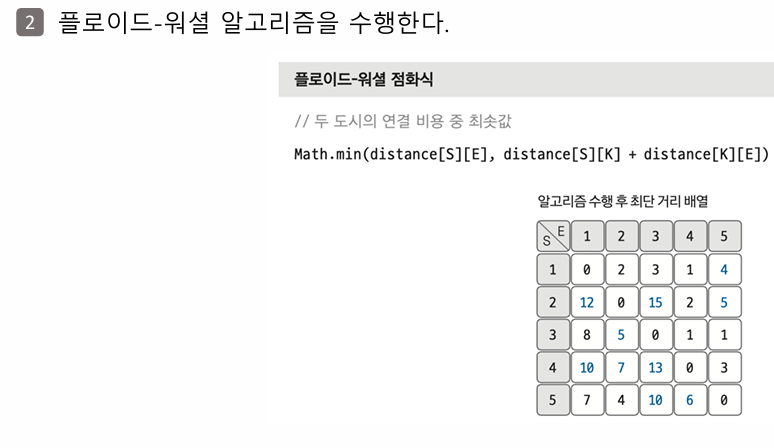

N개의 도시와 M개의 버스 노선이 있습니다. 각 버스 노선은 시간(가중치)을 가지며, 이 시간은 음수일 수도 있습니다. (시간을 되돌아가는 경우) 1번 도시에서 출발하여 나머지 모든 도시로 가는 가장 빠른 시간을 구하는 문제입니다.
만약 시간을 무한히 되돌릴 수 있는 '음수 사이클'이 존재한다면 -1을 출력합니다. 특정 도시로 가는 경로가 없다면 -1을 출력합니다.
이 문제는 가중치에 음수가 포함되므로 벨만-포드(Bellman-Ford) 알고리즘을 사용해야 합니다.
[입력] 3 4 1 2 4 1 3 3 2 3 -1 3 1 -2 [출력] -1 (설명: 1-2-3-1 경로가 (4) + (-1) + (-2) = 1 로 양수지만, 3-1-2-3 경로가 (-2) + (4) + (-1) = 1... 잠시, 예시를 다시 확인합니다. [입력] 3 4 1 2 4 1 3 3 2 3 -2 3 1 -2 [출력] -1 (설명: 3-1-2-3 경로의 합이 -2 + 4 + (-2) = 0 입니다. 만약 2-3이 -3이었다면 음수 사이클이 됩니다. 제공된 코드의 예시로 다시 테스트하겠습니다.) [입력] 3 2 1 2 4 1 3 3 [출력] 4 3 (음수 사이클이 없는 경우)
# 11657: 타임머신 (제공된 코드)
import sys
input = sys.stdin.readline
INF = sys.maxsize
n, m = map(int, input().split())
edges = []
# 벨만-포드는 long long 타입이 필요할 수 있으나, 문제 조건에 따라 int로도 가능할 수 있습니다.
# Python은 정수 범위가 자유롭습니다.
distance = [INF] * (n + 1)
for _ in range(m):
a, b, c = map(int, input().split())
edges.append((a, b, c))
def bellman_ford(start):
distance[start] = 0
# N번 반복 (N-1번 갱신 + 1번 음수 사이클 확인)
for i in range(n):
for j in range(m):
current_node, next_node, cost = edges[j]
# 현재 노드까지 도달 가능하고, 더 짧은 경로가 발견되면
if distance[current_node] != INF and distance[next_node] > distance[current_node] + cost:
distance[next_node] = distance[current_node] + cost
# N번째 반복에서도 갱신이 발생하면 음수 사이클 존재
if i == n - 1:
return True
return False
has_negative_cycle = bellman_ford(1)
if has_negative_cycle:
print("-1")
else:
for i in range(2, n + 1):
# 도달할 수 없는 노드
if distance[i] == INF:
print("-1")
else:
print(distance[i])
// 11657: 타임머신
import java.io.BufferedReader;
import java.io.InputStreamReader;
import java.io.IOException;
import java.util.ArrayList;
import java.util.StringTokenizer;
import java.util.Arrays;
class Edge {
int from;
int to;
int cost;
Edge(int from, int to, int cost) {
this.from = from;
this.to = to;
this.cost = cost;
}
}
public class Main {
static final long INF = Long.MAX_VALUE;
public static void main(String[] args) throws IOException {
BufferedReader br = new BufferedReader(new InputStreamReader(System.in));
StringTokenizer st = new StringTokenizer(br.readLine());
int N = Integer.parseInt(st.nextToken());
int M = Integer.parseInt(st.nextToken());
ArrayList<Edge> edges = new ArrayList<>();
// 음수 가중치 합이 int 범위를 벗어날 수 있으므로 long 사용
long[] distance = new long[N + 1];
Arrays.fill(distance, INF);
for (int i = 0; i < M; i++) {
st = new StringTokenizer(br.readLine());
int a = Integer.parseInt(st.nextToken());
int b = Integer.parseInt(st.nextToken());
int c = Integer.parseInt(st.nextToken());
edges.add(new Edge(a, b, c));
}
if (bellmanFord(N, M, edges, distance, 1)) {
System.out.println("-1");
} else {
StringBuilder sb = new StringBuilder();
for (int i = 2; i <= N; i++) {
if (distance[i] == INF) {
sb.append("-1\n");
} else {
sb.append(distance[i]).append("\n");
}
}
System.out.print(sb.toString());
}
}
static boolean bellmanFord(int N, int M, ArrayList<Edge> edges, long[] distance, int start) {
distance[start] = 0;
// N번 반복
for (int i = 1; i <= N; i++) {
for (int j = 0; j < M; j++) {
Edge edge = edges.get(j);
if (distance[edge.from] != INF && distance[edge.to] > distance[edge.from] + edge.cost) {
distance[edge.to] = distance[edge.from] + edge.cost;
// N번째 반복에서도 갱신되면 음수 사이클
if (i == N) {
return true;
}
}
}
}
return false;
}
}
// 11657: 타임머신
const fs = require('fs');
const input = fs.readFileSync('/dev/stdin').toString().trim().split('\n');
const [N, M] = input[0].split(' ').map(Number);
const edges = [];
// JavaScript의 Number는 64비트 부동소수점. 정수 범위 충분.
const INF = Number.MAX_SAFE_INTEGER;
const distance = new Array(N + 1).fill(INF);
for (let i = 1; i <= M; i++) {
const [a, b, c] = input[i].split(' ').map(Number);
edges.push([a, b, c]);
}
function bellmanFord(start) {
distance[start] = 0;
// N번 반복
for (let i = 1; i <= N; i++) {
for (let j = 0; j < M; j++) {
const [currentNode, nextNode, cost] = edges[j];
if (distance[currentNode] !== INF && distance[nextNode] > distance[currentNode] + cost) {
distance[nextNode] = distance[currentNode] + cost;
// N번째에도 갱신되면 음수 사이클
if (i === N) {
return true;
}
}
}
}
return false;
}
const hasNegativeCycle = bellmanFord(1);
const results = [];
if (hasNegativeCycle) {
console.log("-1");
} else {
for (let i = 2; i <= N; i++) {
if (distance[i] === INF) {
results.push("-1");
} else {
results.push(distance[i]);
}
}
console.log(results.join('\n'));
}
n(2 ≤ n ≤ 100)개의 도시가 있습니다. 그리고 한 도시에서 출발하여 다른 도시에 도착하는 m(1 ≤ m ≤ 100,000)개의 버스가 있습니다. 각 버스는 비용이 있습니다.
목표: 모든 도시의 쌍 (A, B)에 대해서 도시 A에서 B로 가는데 필요한 최소 비용을 구하는 것입니다.
이 문제는 플로이드-워셜(Floyd-Warshall) 알고리즘을 사용하며, 3중 반복문을 통해 "i에서 j로 가는 비용"과 "i에서 k를 거쳐 j로 가는 비용"을 비교하여 최단 경로를 갱신합니다.
먼저 n x n 크기의 2차원 배열(graph)을 만듭니다.
graph[i][i])은 0으로 설정합니다.a, b, c)를 graph[a][b] = c로 저장합니다.
c)이 들어오면 갱신합니다. (min 연산)(사진 1 설명)
첫 번째 사진은 이 초기화 과정을 보여줍니다.
- 왼쪽 표: 대각선은 0, 나머지는 무한대(∞)로 초기화된 상태입니다.
- 오른쪽 표: 입력받은 직항 버스 정보(1→2는 2, 1→3은 3 등)가 덮어써진 '직항 가격표'입니다.
이제 3중 반복문으로 "경유지"를 고려하여 '직항 가격표'를 '최종 최저가 표'로 업데이트합니다.
for k in 1...n: // k = 거쳐가는 노드
for i in 1...n: // i = 출발 노드
for j in 1...n: // j = 도착 노드
// i→j (직항) vs i→k→j (경유)
graph[i][j] = min(graph[i][j], graph[i][k] + graph[k][j])
(사진 2 설명)
두 번째 사진은 이 2단계의 핵심과 결과를 보여줍니다.
- 플로이드-워셜 점화식: "직항이 쌀까? K-경유가 쌀까?"를 비교하는 핵심 로직입니다. (S=i, E=j, K=k)
- 알고리즘 수행 후 최단 거리 배열: 3중 반복문이 모두 끝나고, 경유를 통해 더 싸게 갱신된 '최종 최저가 표'입니다.
이 과정이 모두 끝나면 graph[i][j]에는 i에서 j로 가는 최단 거리가 저장됩니다. 만약 값이 여전히 INF라면 경로가 없는 것이며, 문제의 요구사항에 따라 0을 출력합니다.
첫째 줄에 도시의 개수 n이 주어지고 둘째 줄에는 버스의 개수 m이 주어진다. 그리고 셋째 줄부터 m+2줄까지 다음과 같은 버스의 정보가 주어진다. 먼저 처음에는 그 버스의 출발 도시의 번호가 주어진다. 버스의 정보는 버스의 시작 도시 a, 도착 도시 b, 한 번 타는데 필요한 비용 c로 이루어져 있다. 시작 도시와 도착 도시가 같은 경우는 없다. 비용은 100,000보다 작거나 같은 자연수이다. 시작 도시와 도착 도시를 연결하는 노선은 하나가 아닐 수 있다.
n개의 줄을 출력해야 한다. i번째 줄에 출력하는 j번째 숫자는 도시 i에서 j로 가는데 필요한 최소 비용이다. 만약, i에서 j로 갈 수 없는 경우에는 그 자리에 0을 출력한다.
[입력] 5 14 1 2 2 1 3 3 1 4 1 1 5 10 2 4 2 3 4 1 3 5 1 4 5 3 3 5 10 3 1 8 1 4 2 5 1 7 3 4 2 5 2 4 [출력] 0 2 3 1 4 12 0 15 2 5 8 5 0 1 1 10 7 13 0 3 7 4 10 6 0
# 11404: 플로이드 (제공된 코드)
import sys
input = sys.stdin.readline
INF = sys.maxsize
n = int(input())
m = int(input())
# 2차원 그래프 (최대값으로 초기화)
graph = [[INF] * (n + 1) for _ in range(n + 1)]
# 자기 자신으로 가는 비용은 0
for i in range(1, n + 1):
graph[i][i] = 0
# 간선 정보 입력 (더 짧은 경로만 저장)
for _ in range(m):
a, b, c = map(int, input().split())
if c < graph[a][b]:
graph[a][b] = c
# 플로이드-워셜 알고리즘
for k in range(1, n + 1): # k = 거쳐가는 노드
for i in range(1, n + 1): # i = 출발 노드
for j in range(1, n + 1): # j = 도착 노드
cost_via_k = graph[i][k] + graph[k][j]
if cost_via_k < graph[i][j]:
graph[i][j] = cost_via_k
# 결과 출력
for i in range(1, n + 1):
for j in range(1, n + 1):
# 도달할 수 없으면 0 출력
if graph[i][j] == INF:
print(0, end=" ")
else:
print(graph[i][j], end=" ")
print()
// 11404: 플로이드
import java.io.BufferedReader;
import java.io.InputStreamReader;
import java.io.IOException;
import java.util.StringTokenizer;
public class Main {
// INF 값은 (간선 가중치 * N) 보다 커야 함
static final int INF = 100000 * 100 + 1;
public static void main(String[] args) throws IOException {
BufferedReader br = new BufferedReader(new InputStreamReader(System.in));
int n = Integer.parseInt(br.readLine());
int m = Integer.parseInt(br.readLine());
int[][] graph = new int[n + 1][n + 1];
// INF로 초기화
for (int i = 1; i <= n; i++) {
for (int j = 1; j <= n; j++) {
if (i != j) {
graph[i][j] = INF;
}
}
}
for (int i = 0; i < m; i++) {
StringTokenizer st = new StringTokenizer(br.readLine());
int a = Integer.parseInt(st.nextToken());
int b = Integer.parseInt(st.nextToken());
int c = Integer.parseInt(st.nextToken());
// 더 짧은 간선만 저장
graph[a][b] = Math.min(graph[a][b], c);
}
// 플로이드-워셜
for (int k = 1; k <= n; k++) {
for (int i = 1; i <= n; i++) {
for (int j = 1; j <= n; j++) {
long cost_via_k = (long)graph[i][k] + graph[k][j];
if (cost_via_k < graph[i][j]) {
graph[i][j] = (int)cost_via_k;
}
}
}
}
StringBuilder sb = new StringBuilder();
for (int i = 1; i <= n; i++) {
for (int j = 1; j <= n; j++) {
if (graph[i][j] == INF) {
sb.append("0 ");
} else {
sb.append(graph[i][j]).append(" ");
}
}
sb.append("\n");
}
System.out.print(sb.toString());
}
}
// 11404: 플로이드
const fs = require('fs');
const input = fs.readFileSync('/dev/stdin').toString().trim().split('\n');
const n = +input[0];
const m = +input[1];
const INF = Infinity;
const graph = Array.from({ length: n + 1 }, () => new Array(n + 1).fill(INF));
for (let i = 1; i <= n; i++) {
graph[i][i] = 0;
}
for (let i = 2; i < m + 2; i++) {
const [a, b, c] = input[i].split(' ').map(Number);
graph[a][b] = Math.min(graph[a][b], c);
}
// 플로이드-워셜
for (let k = 1; k <= n; k++) {
for (let i = 1; i <= n; i++) {
for (let j = 1; j <= n; j++) {
const cost_via_k = graph[i][k] + graph[k][j];
if (cost_via_k < graph[i][j]) {
graph[i][j] = cost_via_k;
}
}
}
}
const results = [];
for (let i = 1; i <= n; i++) {
const row = [];
for (let j = 1; j <= n; j++) {
if (graph[i][j] === INF) {
row.push(0);
} else {
row.push(graph[i][j]);
}
}
results.push(row.join(' '));
}
console.log(results.join('\n'));
그래프가 주어졌을 때, 그 그래프의 '최소 스패닝 트리'를 구하는 문제입니다. 최소 스패닝 트리(MST)는 주어진 그래프의 모든 정점(V)을 포함하되, 간선의 가중치 합이 최소가 되도록 하는 트리(사이클이 없는 연결 그래프)입니다.
이 문제는 크루스칼(Kruskal) 알고리즘 또는 프림(Prim) 알고리즘으로 풀 수 있습니다. 제공된 코드는 크루스칼 알고리즘을 사용합니다.
[입력] 3 3 1 2 1 2 3 2 1 3 3 [출력] 3 (설명: 1-2 (비용 1), 2-3 (비용 2) 간선을 선택하면 총 비용 3으로 모든 정점을 연결할 수 있습니다.)
# 1197: 최소 스패닝 트리 (제공된 코드 - 크루스칼)
import sys
input = sys.stdin.readline
sys.setrecursionlimit(100000)
# 루트 노드 찾기 (경로 압축)
def find_parent(parent, x):
if parent[x] == x:
return x
parent[x] = find_parent(parent, parent[x])
return parent[x]
# 두 집합 합치기
def union_parent(parent, a, b):
rootA = find_parent(parent, a)
rootB = find_parent(parent, b)
if rootA < rootB:
parent[rootB] = rootA
else:
parent[rootA] = rootB
v, e = map(int, input().split())
parent = [i for i in range(v + 1)]
edges = []
total_cost = 0
for _ in range(e):
a, b, cost = map(int, input().split())
edges.append((cost, a, b))
# 간선을 비용순으로 정렬
edges.sort()
# 크루스칼 알고리즘
for edge in edges:
cost, a, b = edge
# 두 노드의 루트가 다르면 (사이클이 아니면)
if find_parent(parent, a) != find_parent(parent, b):
union_parent(parent, a, b) # 집합에 포함
total_cost += cost
print(total_cost)
// 1197: 최소 스패닝 트리 (크루스칼)
import java.io.BufferedReader;
import java.io.InputStreamReader;
import java.io.IOException;
import java.util.ArrayList;
import java.util.Collections;
import java.util.StringTokenizer;
class Edge implements Comparable<Edge> {
int from;
int to;
int cost;
Edge(int from, int to, int cost) {
this.from = from;
this.to = to;
this.cost = cost;
}
// 비용 기준 오름차순 정렬
@Override
public int compareTo(Edge o) {
return Integer.compare(this.cost, o.cost);
}
}
public class Main {
static int[] parent;
static int findParent(int x) {
if (parent[x] == x) return x;
return parent[x] = findParent(parent[x]);
}
static void unionParent(int a, int b) {
int rootA = findParent(a);
int rootB = findParent(b);
if (rootA < rootB) {
parent[rootB] = rootA;
} else {
parent[rootA] = rootB;
}
}
public static void main(String[] args) throws IOException {
BufferedReader br = new BufferedReader(new InputStreamReader(System.in));
StringTokenizer st = new StringTokenizer(br.readLine());
int V = Integer.parseInt(st.nextToken());
int E = Integer.parseInt(st.nextToken());
parent = new int[V + 1];
for (int i = 1; i <= V; i++) {
parent[i] = i;
}
ArrayList<Edge> edges = new ArrayList<>();
for (int i = 0; i < E; i++) {
st = new StringTokenizer(br.readLine());
int a = Integer.parseInt(st.nextToken());
int b = Integer.parseInt(st.nextToken());
int cost = Integer.parseInt(st.nextToken());
edges.add(new Edge(a, b, cost));
}
Collections.sort(edges);
long totalCost = 0;
for (Edge edge : edges) {
// 사이클이 발생하지 않으면
if (findParent(edge.from) != findParent(edge.to)) {
unionParent(edge.from, edge.to);
totalCost += edge.cost;
}
}
System.out.println(totalCost);
}
}
// 1197: 최소 스패닝 트리 (크루스칼)
const fs = require('fs');
const input = fs.readFileSync('/dev/stdin').toString().trim().split('\n');
const [V, E] = input[0].split(' ').map(Number);
const parent = Array.from({ length: V + 1 }, (_, i) => i);
const edges = [];
let totalCost = 0;
// 루트 노드 찾기 (경로 압축)
function findParent(x) {
if (parent[x] === x) {
return x;
}
return (parent[x] = findParent(parent[x]));
}
// 집합 합치기
function unionParent(a, b) {
const rootA = findParent(a);
const rootB = findParent(b);
if (rootA < rootB) {
parent[rootB] = rootA;
} else {
parent[rootA] = rootB;
}
}
for (let i = 1; i <= E; i++) {
const [a, b, cost] = input[i].split(' ').map(Number);
edges.push({ cost, a, b });
}
// 비용 기준 오름차순 정렬
edges.sort((a, b) => a.cost - b.cost);
for (const edge of edges) {
const { cost, a, b } = edge;
// 사이클이 아니면
if (findParent(a) !== findParent(b)) {
unionParent(a, b);
totalCost += cost;
}
}
console.log(totalCost);
루트가 1인 트리가 주어집니다. 이 트리는 N개의 노드와 N-1개의 간선으로 이루어져 있습니다. 1번 노드를 제외한 2번부터 N번까지의 모든 노드에 대해, 각 노드의 부모 노드를 찾아 출력하는 문제입니다.
이 문제는 DFS 또는 BFS를 사용하여 루트(1번)에서부터 탐색을 시작하면서, "누가 나를 방문하게 했는지"를 기록하면 됩니다.
[입력] 7 1 6 6 3 3 5 4 1 2 4 4 7 [출력] 4 6 1 3 1 4 (설명: 2번의 부모는 4, 3번의 부모는 6, 4번의 부모는 1, ... 7번의 부모는 4입니다.)
# 11725: 트리의 부모 찾기 (제공된 코드 - BFS)
import sys
from collections import deque
input = sys.stdin.readline
sys.setrecursionlimit(10**6) # (DFS를 사용할 경우 필요, BFS는 불필요)
n = int(input())
graph = [[] for _ in range(n + 1)]
parent = [0] * (n + 1) # 부모 노드 저장 (0은 미방문)
for _ in range(n - 1):
a, b = map(int, input().split())
# 트리는 양방향으로 연결 정보가 주어짐
graph[a].append(b)
graph[b].append(a)
queue = deque([1]) # 루트 노드(1)에서 시작
parent[1] = 1 # (루트의 부모는 편의상 1 또는 특정값으로. 방문 표시)
while queue:
v = queue.popleft()
for u in graph[v]:
if parent[u] == 0: # 아직 방문하지 않았다면
parent[u] = v # v가 u의 부모가 됨
queue.append(u)
for i in range(2, n + 1):
print(parent[i])
// 11725: 트리의 부모 찾기 (BFS)
import java.io.BufferedReader;
import java.io.InputStreamReader;
import java.io.IOException;
import java.util.ArrayList;
import java.util.LinkedList;
import java.util.Queue;
import java.util.StringTokenizer;
public class Main {
public static void main(String[] args) throws IOException {
BufferedReader br = new BufferedReader(new InputStreamReader(System.in));
int N = Integer.parseInt(br.readLine());
ArrayList<ArrayList<Integer>> graph = new ArrayList<>();
for (int i = 0; i <= N; i++) {
graph.add(new ArrayList<>());
}
int[] parent = new int[N + 1];
for (int i = 0; i < N - 1; i++) {
StringTokenizer st = new StringTokenizer(br.readLine());
int a = Integer.parseInt(st.nextToken());
int b = Integer.parseInt(st.nextToken());
graph.get(a).add(b);
graph.get(b).add(a);
}
Queue<Integer> queue = new LinkedList<>();
queue.add(1);
parent[1] = 1; // 방문 표시 (루트는 부모가 없지만 0이 아닌 값으로)
while (!queue.isEmpty()) {
int v = queue.poll();
for (int u : graph.get(v)) {
if (parent[u] == 0) { // 미방문 노드라면
parent[u] = v; // v가 u의 부모
queue.add(u);
}
}
}
StringBuilder sb = new StringBuilder();
for (int i = 2; i <= N; i++) {
sb.append(parent[i]).append('\n');
}
System.out.print(sb.toString());
}
}
// 11725: 트리의 부모 찾기 (BFS)
const fs = require('fs');
const input = fs.readFileSync('/dev/stdin').toString().trim().split('\n');
const N = +input[0];
const graph = Array.from({ length: N + 1 }, () => []);
const parent = new Array(N + 1).fill(0);
for (let i = 1; i < N; i++) {
const [a, b] = input[i].split(' ').map(Number);
graph[a].push(b);
graph[b].push(a);
}
const queue = [1]; // 루트 1에서 시작
parent[1] = 1; // 방문 표시
let head = 0;
while (head < queue.length) {
const v = queue[head++];
for (const u of graph[v]) {
if (parent[u] === 0) {
parent[u] = v; // v가 u의 부모
queue.push(u);
}
}
}
const results = [];
for (let i = 2; i <= N; i++) {
results.push(parent[i]);
}
console.log(results.join('\n'));
트리가 주어집니다. 트리의 노드는 0번부터 N-1번까지이며, 각 노드의 부모가 주어집니다. (부모가 없으면 -1, 즉 루트) 이때, 특정 노드 하나를 지웠을 때, 남아있는 트리에서 리프 노드(자식이 없는 노드)의 개수를 구하는 문제입니다. (노드를 지우면 그 노드와 그 자손들이 모두 트리에서 제거됩니다.)
[입력] 5 -1 0 0 1 1 2 [출력] 2 (설명: 0번이 루트. 0의 자식은 1, 2. 1의 자식은 3, 4. 여기서 2번 노드를 지우면, 0의 자식은 1만 남습니다. 1의 자식은 3, 4입니다. 3, 4는 자식이 없으므로 리프 노드입니다. 총 2개.)
# 1068: 트리 (제공된 코드)
# (참고: 제공된 코드는 양방향 그래프로 구현 후, DFS시 부모 노드를 체크하여 리프를 셈)
import sys
sys.setrecursionlimit(10**6)
input = sys.stdin.readline
def dfs(node, parent_node):
global leaf_count
# 지워진 노드면 탐색 중단
if node == removed_node:
return
children = 0
for child in graph[node]:
# 부모 노드로 돌아가지 않고, 지워진 노드가 아니어야 함
if child != parent_node and child != removed_node:
children += 1
dfs(child, node) # 재귀적으로 자식 탐색
# 유효한 자식이 하나도 없으면 리프 노드
if children == 0:
leaf_count += 1
n = int(input())
parents = list(map(int, input().split()))
removed_node = int(input())
graph = [[] for _ in range(n)] # 양방향 그래프
root = -1
leaf_count = 0
for i in range(n):
if parents[i] == -1:
root = i
else:
# 양방향 연결
graph[i].append(parents[i])
graph[parents[i]].append(i)
# 루트가 지워지면 리프는 0개
if root == removed_node:
print(0)
else:
dfs(root, -1) # 루트의 부모는 -1로 설정
print(leaf_count)
// 1068: 트리
import java.io.BufferedReader;
import java.io.InputStreamReader;
import java.io.IOException;
import java.util.ArrayList;
import java.util.StringTokenizer;
public class Main {
static ArrayList<ArrayList<Integer>> graph;
static int removedNode;
static int leafCount = 0;
public static void main(String[] args) throws IOException {
BufferedReader br = new BufferedReader(new InputStreamReader(System.in));
int N = Integer.parseInt(br.readLine());
graph = new ArrayList<>();
for (int i = 0; i < N; i++) {
graph.add(new ArrayList<>());
}
StringTokenizer st = new StringTokenizer(br.readLine());
int root = -1;
int[] parentNodes = new int[N];
for (int i = 0; i < N; i++) {
parentNodes[i] = Integer.parseInt(st.nextToken());
if (parentNodes[i] == -1) {
root = i;
} else {
// 양방향 그래프 구성
graph.get(i).add(parentNodes[i]);
graph.get(parentNodes[i]).add(i);
}
}
removedNode = Integer.parseInt(br.readLine());
if (root == removedNode) {
System.out.println(0);
} else {
dfs(root, -1);
System.out.println(leafCount);
}
}
static void dfs(int node, int parentNode) {
if (node == removedNode) {
return;
}
int children = 0;
for (int child : graph.get(node)) {
if (child != parentNode && child != removedNode) {
children++;
dfs(child, node);
}
}
if (children == 0) {
leafCount++;
}
}
}
// 1068: 트리
const fs = require('fs');
const input = fs.readFileSync('/dev/stdin').toString().trim().split('\n');
const N = +input[0];
const parents = input[1].split(' ').map(Number);
const removedNode = +input[2];
const graph = Array.from({ length: N }, () => []);
let root = -1;
let leafCount = 0;
for (let i = 0; i < N; i++) {
if (parents[i] === -1) {
root = i;
} else {
graph[i].push(parents[i]);
graph[parents[i]].push(i);
}
}
function dfs(node, parentNode) {
if (node === removedNode) {
return;
}
let children = 0;
for (const child of graph[node]) {
if (child !== parentNode && child !== removedNode) {
children++;
dfs(child, node);
}
}
if (children === 0) {
leafCount++;
}
}
if (root === removedNode) {
console.log(0);
} else {
dfs(root, -1);
console.log(leafCount);
}
총 N개의 문자열로 이루어진 집합 S가 주어집니다. 이어서 M개의 문자열이 주어지는데, 이 M개의 문자열 중에서 집합 S에 포함되어 있는 것이 총 몇 개인지 구하는 문제입니다.
이 문제는 해시 셋(Hash Set) 자료구조를 사용하면 매우 효율적으로 풀 수 있습니다. N개의 문자열을 Set에 모두 저장한 뒤, M개의 문자열을 하나씩 Set에 포함되어 있는지(contains 또는 has) 검사합니다.
[입력] 5 11 baekjoononlinejudge startlink codingtest sv startlink --- (여기까지 N=5, 집합 S) --- baekjoononlinejudge codingtest startlink sv codingtest startlink baekjoononlinejudge startlink codingtest sv startlink --- (여기까지 M=11, 검사 문자열) --- [출력] 4 (설명: 'baekjoononlinejudge', 'codingtest', 'startlink', 'sv' 4개가 집합 S에 포함되어 있습니다.)
# 14425: 문자열 집합 (제공된 코드)
import sys
input = sys.stdin.readline
n, m = map(int, input().split())
s = set()
for _ in range(n):
s.add(input().rstrip()) # 개행 문자 제거 후 set에 추가
count = 0
for _ in range(m):
check_str = input().rstrip()
if check_str in s: # Set의 in 연산은 O(1)
count += 1
print(count)
// 14425: 문자열 집합
import java.io.BufferedReader;
import java.io.InputStreamReader;
import java.io.IOException;
import java.util.HashSet;
import java.util.StringTokenizer;
public class Main {
public static void main(String[] args) throws IOException {
BufferedReader br = new BufferedReader(new InputStreamReader(System.in));
StringTokenizer st = new StringTokenizer(br.readLine());
int N = Integer.parseInt(st.nextToken());
int M = Integer.parseInt(st.nextToken());
HashSet<String> s = new HashSet<>();
for (int i = 0; i < N; i++) {
s.add(br.readLine());
}
int count = 0;
for (int i = 0; i < M; i++) {
String checkStr = br.readLine();
// HashSet.contains()는 평균 O(1)
if (s.contains(checkStr)) {
count++;
}
}
System.out.println(count);
}
}
// 14425: 문자열 집합
const fs = require('fs');
const input = fs.readFileSync('/dev/stdin').toString().trim().split('\n');
const [N, M] = input[0].split(' ').map(Number);
const s = new Set();
for (let i = 1; i <= N; i++) {
s.add(input[i]);
}
let count = 0;
for (let i = N + 1; i < N + 1 + M; i++) {
const checkStr = input[i];
// Set.has()는 평균 O(1)
if (s.has(checkStr)) {
count++;
}
}
console.log(count);
이진 트리를 입력받아 전위 순회(preorder), 중위 순회(inorder), 후위 순회(postorder)한 결과를 출력하는 문제입니다.
루트 노드는 항상 'A'입니다. 각 노드와 그 노드의 왼쪽 자식, 오른쪽 자식이 주어지며, 자식이 없는 경우는 '.'으로 표시됩니다.
[입력] 7 A B C B D . C E F E . . F . G D . . G . . [출력] ABDCEFG (전위 순회: 루트 -> 왼쪽 -> 오른쪽) DBAECFG (중위 순회: 왼쪽 -> 루트 -> 오른쪽) DBEGFCA (후위 순회: 왼쪽 -> 오른쪽 -> 루트)
# 1991: 트리 순회 (제공된 코드)
import sys
input = sys.stdin.readline
sys.setrecursionlimit(10**6)
n = int(input())
tree = {}
# 트리를 딕셔너리로 구현
for _ in range(n):
node, left, right = input().split()
tree[node] = [left, right]
# 전위 순회 (루트 -> 왼쪽 -> 오른쪽)
def preorder(node):
if node == '.':
return
print(node, end='')
preorder(tree[node][0])
preorder(tree[node][1])
# 중위 순회 (왼쪽 -> 루트 -> 오른쪽)
def inorder(node):
if node == '.':
return
inorder(tree[node][0])
print(node, end='')
inorder(tree[node][1])
# 후위 순회 (왼쪽 -> 오른쪽 -> 루트)
def postorder(node):
if node == '.':
return
postorder(tree[node][0])
postorder(tree[node][1])
print(node, end='')
preorder('A')
print()
inorder('A')
print()
postorder('A')
print()
// 1991: 트리 순회
import java.io.BufferedReader;
import java.io.InputStreamReader;
import java.io.IOException;
import java.util.HashMap;
import java.util.StringTokenizer;
public class Main {
static HashMap<String, String[]> tree = new HashMap<>();
// 출력을 한번에 하기 위한 StringBuilder
static StringBuilder sb_pre = new StringBuilder();
static StringBuilder sb_in = new StringBuilder();
static StringBuilder sb_post = new StringBuilder();
public static void main(String[] args) throws IOException {
BufferedReader br = new BufferedReader(new InputStreamReader(System.in));
int N = Integer.parseInt(br.readLine());
for (int i = 0; i < N; i++) {
StringTokenizer st = new StringTokenizer(br.readLine());
String node = st.nextToken();
String left = st.nextToken();
String right = st.nextToken();
tree.put(node, new String[]{left, right});
}
preorder("A");
inorder("A");
postorder("A");
System.out.println(sb_pre.toString());
System.out.println(sb_in.toString());
System.out.println(sb_post.toString());
}
static void preorder(String node) {
if (node.equals(".")) {
return;
}
sb_pre.append(node);
preorder(tree.get(node)[0]);
preorder(tree.get(node)[1]);
}
static void inorder(String node) {
if (node.equals(".")) {
return;
}
inorder(tree.get(node)[0]);
sb_in.append(node);
inorder(tree.get(node)[1]);
}
static void postorder(String node) {
if (node.equals(".")) {
return;
}
postorder(tree.get(node)[0]);
postorder(tree.get(node)[1]);
sb_post.append(node);
}
}
// 1991: 트리 순회
const fs = require('fs');
const input = fs.readFileSync('/dev/stdin').toString().trim().split('\n');
const N = +input[0];
const tree = {};
for (let i = 1; i <= N; i++) {
const [node, left, right] = input[i].split(' ');
tree[node] = [left, right];
}
let result_pre = '';
let result_in = '';
let result_post = '';
// 전위 순회
function preorder(node) {
if (node === '.') {
return;
}
result_pre += node;
preorder(tree[node][0]);
preorder(tree[node][1]);
}
// 중위 순회
function inorder(node) {
if (node === '.') {
return;
}
inorder(tree[node][0]);
result_in += node;
inorder(tree[node][1]);
}
// 후위 순회
function postorder(node) {
if (node === '.') {
return;
}
postorder(tree[node][0]);
postorder(tree[node][1]);
result_post += node;
}
preorder('A');
inorder('A');
postorder('A');
console.log(result_pre);
console.log(result_in);
console.log(result_post);